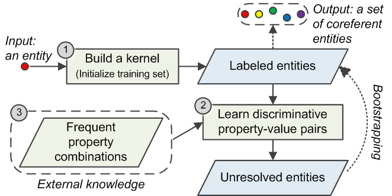

Wei Hu, Cunxin Jia. A Bootstrapping Approach to Entity Linkage on the Semantic Web. Journal of Web Semantics, 2015
In the Big Data era, ever-increasing RDF data have reached a scale in billions of entities and brought challenges to the problem of entity linkage on the Semantic Web. Although millions of entities, typically denoted by URIs, have been explicitly linked with owl:sameAs, potentially coreferent ones are still numerous. Existing automatic approaches address this problem mainly from two perspectives: one is via equivalence reasoning, which infers semantically coreferent entities but probably misses many potentials; the other is by similarity computation between property-values of entities, which is not always accurate and do not scale well. In this paper, we introduce a bootstrapping approach by leveraging these two kinds of methods for entity linkage. Given an entity, our approach firstly infers a set of semantically coreferent entities. Then, it iteratively expands this entity set using discriminative property-value pairs. The discriminability is learned with a statistical measure, which does not only identify important property-values in the entity set, but also takes matched properties into account. Frequent property combinations are also mined to improve linkage accuracy. We develop an online entity linkage search engine, and show its superior precision and recall by comparing with representative approaches on a large-scale and two benchmark datasets.
In the Big Data era, ever-increasing RDF data have reached a scale in billions of entities and brought challenges to the problem of entity linkage on the Semantic Web. Although millions of entities, typically denoted by URIs, have been explicitly linked with owl:sameAs, potentially coreferent ones are still numerous. Existing automatic approaches address this problem mainly from two perspectives: one is via equivalence reasoning, which infers semantically coreferent entities but probably misses many potentials; the other is by similarity computation between property-values of entities, which is not always accurate and do not scale well. In this paper, we introduce a bootstrapping approach by leveraging these two kinds of methods for entity linkage. Given an entity, our approach firstly infers a set of semantically coreferent entities. Then, it iteratively expands this entity set using discriminative property-value pairs. The discriminability is learned with a statistical measure, which does not only identify important property-values in the entity set, but also takes matched properties into account. Frequent property combinations are also mined to improve linkage accuracy. We develop an online entity linkage search engine, and show its superior precision and recall by comparing with representative approaches on a large-scale and two benchmark datasets.
Methodologies

We propose a bootstrapping approach accepting an entity u as input, and its methodological steps are as follows:
- Build a kernel. We automatically infer a set of semantically coreferent entities for u, referred to as the kernel of u, by using owl:sameAs, (inverse) functional properties and skos:exactMatch. These vocabulary elements are often used for equivalence reasoning, and combining them usually initializes an accurate training set (the inferred entities in the kernel are assumed to be correct). However, noisy data can cause error accumulation in the bootstrapping process.
- Learn discriminative property-value pairs. This is an iterative step. In accordance with previous studies, we make the assumption that coreferent entities share some similar property-value pairs, and a few property-value pairs are more important for linking entities. Given a set of (initially) coreferent entities w.r.t. u, we also approximate a set of non-coreferent entities online in terms of the coreferent ones. The coreferent and non-coreferent entities together constitute the training set of u. In each iteration, we firstly choose a pair of matched properties holding the highest discriminability (measured with information gain). Then, we assign the most distinguishing value to each property in this pair. Note that property matching is involved in the iteration. For the entities in the training set, we extract their property-value pairs and compare them with a string matching algorithm I-Sub. If the similarity between two values is larger than a threshold, the related two properties are matchable. The property-value comparison has the highest computational cost in the bootstrapping process. The learned property-value pairs reflect important characteristics for their denoted resource, and would be used to query new coreferent entities holding the same property-value pairs.
- Exploit frequent property combinations. Some properties are more natural to be used together to characterize an entity, e.g., longitude and latitude for a coordinate. If we only picked up one of them to link entities, e.g., longitude, the result would not be accurate. To this end, we employ association rule mining to find frequent property combinations and refine them using heuristic rules beforehand. In each learning iteration, when a property is chosen and it belongs to some frequent property combination, its counterpart in the combination (e.g., latitude) with the most distinguishing value are complemented. As a result, the properties in the combination with their associated values would be used together to obtain new links.